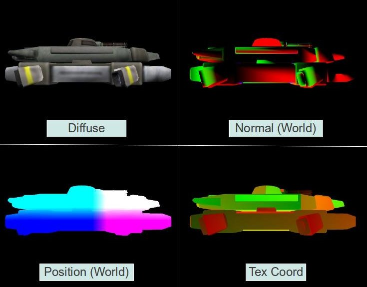

Способ, который мы использовали начиная с 17 урока известен как опережающий рендер (Forward Rendering) или Shading. Это прямолинейный подход, в котором мы производим серию преобразований над вершинами всех объектов в вершинном шейдере (большая часть - перевод нормалей и координат в пространство клипа), за которой следует вычисление света для каждого пикселя во фрагментном шейдере. Так как каждый пиксель используется во фрагментном шейдере лишь раз, то мы должны обеспечить его информацией обо всех источниках света при расчете световой эффект на пиксель. Это простой подход, но он имеет свои недостатки. При сложной сцене (как в большинстве игр) со множеством объектов и ситуациями, когда один и тот же пиксель покрывают несколько объектов, у нас будут пустые затраты ресурсов. Например, если сложность глубины 4, то 3 раза вычисления света будут происходить напрасно, поскольку нужен только верхний пиксель. Мы, конечно, можем сортировать объекты в порядке удаления от камеры, но этот способ не всегда работает для сложных объектов.
Другая проблема опережающего рендера проявляется при большом колличестве источников света. В этом случае свет, как правило, имеет не большой радиус распространения (иначе он зальет всю сцену). Но наш фрагментный шейдер вычисляет эффект каждого источника, даже если он далеко от пикселя. Мы могли бы попробовать вычислить расстояние между ними, но это дополнительные расходы и ветвления. Forward rendering просто не подходит для сцен с большим колличеством источников света. Только представьте сколько вычислений будет происходить при 100 и более источников…
Deferred shading - популярная технология, используемая во многих играх, решающая проблемы, описанные выше. Ключевой момент в том, что происходит разделение вычисления геометрии (преобразования позиции и нормалей) и рассчетов освещения. Вместо того, что бы все объекты проходили весь путь от веринного буффера до итогового расположения в буффере кадра, мы разделяем процесс на 2 большие части. В первом проходе мы запускаем обычный вершинный шейдер, но вместо отправки обработанных аттрибутов в фрагментный для вычисления освещения, мы отправляем их в нечто под названием G(eometry)-Buffer. Внутри он состоит из набора 2D текстур, по одной на каждый аттрибут. Мы разделяем аттрибуты и записываем их в различные текстуры благодаря свойству OpenGL - Multiple Render Targets или (MRT). Т.к. аттрибуты мы в дальнейшем используем во фрагментном шейдере, то значения в G-буффере - это результат интерполяции, выполненой растеризатором над аттрибутами вершин. Этот этап называется Geometry Pass. Каждый объект обрабатывается в этом проходе. Благодаря тесту глубины, после геометрического прохода текстуры в G-буффере заполнены интерполированными аттрибутами ближайших к камере пикселей. Это значит, что все "постороннии" пиксели, которые провалили тест глубины, будут отброшены, останутся только те, для которых следует вычислить освещение. Вот пример G-буффера одного кадра:

Во втором проходе (известном как Lighting Pass) мы пройдем по G-буфферу пиксель за пикселем, получим их аттрибуты из различных текстур и произведем вычисления освещения почти так же, как делали это раньше. Так как все пиксели, кроме самых близких, были отброшенны при создании G-буффера, то вычисления света будут происходить по одному разу на пиксель.
Как мы обходим G-буффер пиксель за пикселем? Простейший способ - рендерить на экран прямоугольник. Но есть способ лучше. Как ранее говорилось, сила источников света постепенно убывают, и их эффект достигает лишь нескольких пикселей. Когда влияние света достаточно малО, то его лучше проигнорировать совсем с точки зрения производительности. В Forward Rendering мы ничего не можем поделать, а вот в Deferred Shading мы можем вычислить размер сферы вокруг источника света (для точечного света, для проектора используется конус). Эта сфера представляет сферу влияния света, и вне ее мы хотим игнорировать источник света. Мы можем использовать очень грубую модель сферы с небольшим колличеством полигонов и просто рендерить ее с источником света в центре. Вершинный шеудер не будет делать ничего, кроме перевода позиции в пространство клипа. Фрагментный будет запущен только для подходящих пикселей, где и будут вычисления света. Некоторые идут еще дальше и находят минимальный прямоугольник, который покрывает эту сферу из точки зрения. Рендерить этот прямоугольник еще проще, так как он состоит из 2 треугольников. Этот метод полезен для ограничения колличества пикселей, для которых фрагментный шейдер действительно нужно запускать.
Мы изучим deferred shading в 3 этапа (и 3 урока):
t35_gbuffer.h
class GBuffer
{
public:
enum GBUFFER_TEXTURE_TYPE {
GBUFFER_TEXTURE_TYPE_POSITION = 0,
GBUFFER_TEXTURE_TYPE_DIFFUSE = 1,
GBUFFER_TEXTURE_TYPE_NORMAL = 2,
GBUFFER_TEXTURE_TYPE_TEXCOORD = 3,
GBUFFER_NUM_TEXTURES = 4,
};
GBuffer() = default;
~GBuffer();
bool Init(uint32_t winWidth, uint32_t winHeight);
void BindForWriting();
void BindForReading();
void SetReadBuffer(GBUFFER_TEXTURE_TYPE textureType);
private:
GLuint m_fbo = 0;
std::array<GLuint, GBUFFER_NUM_TEXTURES> m_textures = {};
GLuint m_depthTexture = 0;
};
Класс GBuffer содержит все текстуры, которые потребуются для Deferred Shading. У нас есть текстуры для аттрибутов вершин, и еще текстура для буффера глубины. Она нам потребуется, так как мы хотим запаковать все текстуры в FBO, поэтому стандартный буффер глубины нам не потребуется. FBO уже был рассмотрен в уроке 23.
Кроме того, класс GBuffer имеет 2 метода, которые будут поочереди вызываться - BindForWriting() привязывает текстуры для геометрического прохода, а BindForReading() привязывает FBO на ввод, так что его содержимое может быть выведено на экран.
t35_gbuffer.cpp
bool GBuffer::Init(uint32_t winWidth, uint32_t winHeight)
{
// Create the FBO
glGenFramebuffers(1, &m_fbo);
glBindFramebuffer(GL_DRAW_FRAMEBUFFER, m_fbo);
// Create the GBuffer textures
glGenTextures(std::size(m_textures), m_textures.data());
glGenTextures(1, &m_depthTexture);
for (unsigned int i = 0; i < std::size(m_textures); i++) {
glBindTexture(GL_TEXTURE_2D, m_textures[ i ]);
glTexImage2D(GL_TEXTURE_2D, 0, GL_RGB32F, winWidth, winHeight, 0, GL_RGB, GL_FLOAT, nullptr);
glFramebufferTexture2D(GL_DRAW_FRAMEBUFFER, GL_COLOR_ATTACHMENT0 + i, GL_TEXTURE_2D, m_textures[i], 0);
}
// Depth Buffer
glBindTexture(GL_TEXTURE_2D, m_depthTexture);
glTexImage2D(GL_TEXTURE_2D, 0, GL_DEPTH_COMPONENT32F, winWidth, winHeight, 0, GL_DEPTH_COMPONENT, GL_FLOAT, nullptr);
glFramebufferTexture2D(GL_DRAW_FRAMEBUFFER, GL_DEPTH_ATTACHMENT, GL_TEXTURE_2D, m_depthTexture, 0);
constexpr GLenum drawBuffers[] = { GL_COLOR_ATTACHMENT0, GL_COLOR_ATTACHMENT1, GL_COLOR_ATTACHMENT2, GL_COLOR_ATTACHMENT3 };
glDrawBuffers(std::size(drawBuffers), drawBuffers);
const GLenum status = glCheckFramebufferStatus(GL_FRAMEBUFFER);
if (status != GL_FRAMEBUFFER_COMPLETE) {
printf("FB error, status: 0x%x\n", status);
return false;
}
// restore default FBO
glBindFramebuffer(GL_DRAW_FRAMEBUFFER, 0);
return true;
}
Так мы инициализируем G-буффер. Мы начинаем с создания FBO и текстур для аттрибутов вершин и буффера глубины. Текстуры для аттрибутов затем проинициализированны через:
Инициализация текстуры глубины производится отдельно так как она имеет отдельный формат и слот в FBO.
Для использования MRT(Multiple Render Targets) нам требуется разрешить запись во все 4 текстуры. Мы делаем это через отправление массива указателей в функцию glDrawBuffers(). Этот массив дает некоторую гибкость, поскольку мы ставим GL_COLOR_ATTACHMENT0 как первый индекс, а затем, когда FS записывает в первую переменную вывода, то он пойдет в текстуру, которая подсоединена к GL_COLOR_ATTACHMENT1. Пока что нам не важна сложность этих действий, в этом уроке мы просто хотим присоединить их одну за другой.
Наконец, мы проверяем состояние FBO, что бы убедиться, что все операции прошли успешно, а затем возвращаем FBO по-умолчанию (тогда дальнейшие изменения не затронут наш G буффер). G буффер готов к использованию.
t35_mainapp.cpp
void MainApp::RenderSceneCB()
{
CalcFPS();
m_scale += 0.05f;
m_pGameCamera->OnRender();
DSGeometryPass();
DSLightPass();
RenderFPS();
glutSwapBuffers();
}
Давайте осмотрим реализацию сверху вниз. Функция выше - главная функция рендера, и она делает не так уж и много. Она обрабатывает немного глобальных переменных, таких как счетчик кадров в секунду, обновляет камеру и т.д. Главная часть вызывает геометрический проход перед проходом света. Как я уже объяснял в этом уроке мы просто генерируем G буффер, поэтому наш световой этап на самом деле ничего не делает. Только выводит G-буффер на экран.
t35_mainapp.cpp
void MainApp::DSGeometryPass()
{
m_DSGeomPassTech.Enable();
m_gbuffer.BindForWriting();
glClear(GL_COLOR_BUFFER_BIT | GL_DEPTH_BUFFER_BIT);
Pipeline pipeline;
pipeline.Scale(0.1f, 0.1f, 0.1f);
pipeline.Rotate(0.0f, m_scale, 0.0f);
pipeline.WorldPos(-0.8f, -1.0f, 12.0f);
pipeline.SetCamera(m_pGameCamera->GetPos(), m_pGameCamera->GetTarget(), m_pGameCamera->GetUp());
pipeline.SetPerspectiveProj(m_perspProjInfo);
m_DSGeomPassTech.SetWVP(pipeline.GetWVPTrans());
m_DSGeomPassTech.SetWorldMatrix(pipeline.GetWorldTrans());
m_mesh.Render();
}
Мы начинаем геометрический проход с разрешения использовать соответствующую технологию и задаем объект GBuffer на запись. После этого мы очищаем G-буффер (glClear() работает с текущим FBO - наш G-буффер). Теперь, когда все готово, мы настраиваем преобразования и рендерим меш. В настоящей игре мы будем рендерить множество мешей, один за другим. Когда мы закончим, G буффер будет содержать аттрибуты ближайших к камере(ближней отсекающей плоскости) пикселей, что позволит пройти этап света.
t35_mainapp.cpp
void MainApp::DSLightPass()
{
// recover default framebuffer state
glBindFramebuffer(GL_DRAW_FRAMEBUFFER, 0);
glClear(GL_COLOR_BUFFER_BIT | GL_DEPTH_BUFFER_BIT);
m_gbuffer.BindForReading();
const auto halfWidth = static_cast(m_winWidth / 2.0f);
const auto halfHeight = static_cast(m_winHeight / 2.0f);
m_gbuffer.SetReadBuffer(GBuffer::GBUFFER_TEXTURE_TYPE_POSITION);
glBlitFramebuffer(0, 0, m_winWidth, m_winHeight, // src rect
0, 0, halfWidth, halfHeight, // dst rect
GL_COLOR_BUFFER_BIT, GL_LINEAR);
m_gbuffer.SetReadBuffer(GBuffer::GBUFFER_TEXTURE_TYPE_DIFFUSE);
glBlitFramebuffer(0, 0, m_winWidth, m_winHeight, // src rect
0, halfHeight, halfWidth, m_winHeight, // dst rect
GL_COLOR_BUFFER_BIT, GL_LINEAR);
m_gbuffer.SetReadBuffer(GBuffer::GBUFFER_TEXTURE_TYPE_NORMAL);
glBlitFramebuffer(0, 0, m_winWidth, m_winHeight, // src rect
halfWidth, halfHeight, m_winWidth, m_winHeight, // dst rect
GL_COLOR_BUFFER_BIT, GL_LINEAR);
m_gbuffer.SetReadBuffer(GBuffer::GBUFFER_TEXTURE_TYPE_TEXCOORD);
glBlitFramebuffer(0, 0, m_winWidth, m_winHeight, // src rect
halfWidth, 0, m_winWidth, halfHeight, // dst rect
GL_COLOR_BUFFER_BIT, GL_LINEAR);
}
Этап света начинается с восстановления стандартного FBO (экран) и очистки его. Затем мы привязываем FBO G буффера для чтения. Теперь мы хотим скопировать текстуры из G-буффера на экран. Один из способов сделать это - написать простую программу, в которой фрагментный шейдер будет брать сэмпл из текстуры и выводить результат. Если мы будем рисовать прямоугольник на весь экран с координатами текстуры от [0,0] до [1,1], то мы, конечно, получим, что хотели. Но есть способ лучше. OpenGL имеет средства для копирования из одного FBO в другой с помощью одного вызова и без каких-либо настроек, которые бы потребовались для других способов. Функция glBlitFramebuffer() принимает координаты источника, назначения и набор других переменных, после чего производит копирование. Для этого требуется источник привязать к GL_READ_FRAMEBUFFER, а получателя к GL_DRAW_FRAMEBUFFER (что мы и сделали в начале функции). Так как FBO может иметь несколько текстур, привязанных к его различным позициям, мы так же должны привязать конкретную текстуру к GL_READ_BUFFER (поскольку мы можем копировать текстуры только по одной). Реализация скрыта в GBuffer::SetReadBuffer(), которая будет рассмотрена позже. Первые 4 параметра в glBlitframebuffer() определяют прямоугольник в источнике - нижний X, нижний Y, верхний X, верхний Y. Следующие 4 параметра аналогичны для назначения.
Девятый параметр говорит, откуда мы хотим считывать - цвет, глубина или стенсил буффер, и может принимаеть значения GL_COLOR_BUFFER_BIT, GL_DEPTH_BUFFER_BIT, или GL_STENCIL_BUFFER_BIT. Последний параметр определяет тип масштабирования OpenGL (когда параметры источника и назначения не совпадают) - GL_NEAREST или GL_LINEAR (дает результат лучше, чем GL_NEAREST, но и требует больше ресурсов). Для буффера цвета применяется только GL_LINEAR. В примере выше видно, как мы масштабируем все текстуры в одну четверть экрана.
geometry_pass.vs
#version 330
layout (location = 0) in vec3 Position;
layout (location = 1) in vec2 TexCoord;
layout (location = 2) in vec3 Normal;
uniform mat4 gWVP;
uniform mat4 gWorld;
out vec2 TexCoord0;
out vec3 Normal0;
out vec3 WorldPos0;
void main()
{
gl_Position = gWVP * vec4(Position, 1.0);
TexCoord0 = TexCoord;
Normal0 = (gWorld * vec4(Normal, 0.0)).xyz;
WorldPos0 = (gWorld * vec4(Position, 1.0)).xyz;
}
geometry_pass.fs
#version 330
in vec2 TexCoord0;
in vec3 Normal0;
in vec3 WorldPos0;
layout (location = 0) out vec3 WorldPosOut;
layout (location = 1) out vec3 DiffuseOut;
layout (location = 2) out vec3 NormalOut;
layout (location = 3) out vec3 TexCoordOut;
uniform sampler2D gColorMap;
void main()
{
WorldPosOut = WorldPos0;
DiffuseOut = texture(gColorMap, TexCoord0).xyz;
NormalOut = normalize(Normal0);
TexCoordOut = vec3(TexCoord0, 0.0);
}
Это файлы вершинного и фрагментного шейдеров геометрического прохода. Здесь ничего нового, вершинный шейдер - просто производит преобразования и передает результат во фрагментный. Фрагментный шейдер ответственнен за MRT. Вместо вывода единственного вектора он выдает структуру из векторов. Каждый из этих векторов имеет соответствующий индекс в массиве, который был подан в вызов функции glDrawBuffers(). Поэтому при каждом вызове фрагментного шейдера мы записываем в 4 текстуры G-буффера.
t35_gbuffer.cpp
void GBuffer::BindForWriting()
{
glBindFramebuffer(GL_DRAW_FRAMEBUFFER, m_fbo);
}
void GBuffer::BindForReading()
{
glBindFramebuffer(GL_READ_FRAMEBUFFER, m_fbo);
}
void GBuffer::SetReadBuffer(GBUFFER_TEXTURE_TYPE TextureType)
{
glReadBuffer(GL_COLOR_ATTACHMENT0 + TextureType);
}
Три функции выше используются для изменения состояния G-буффера для соответсвия коду приложения выше.